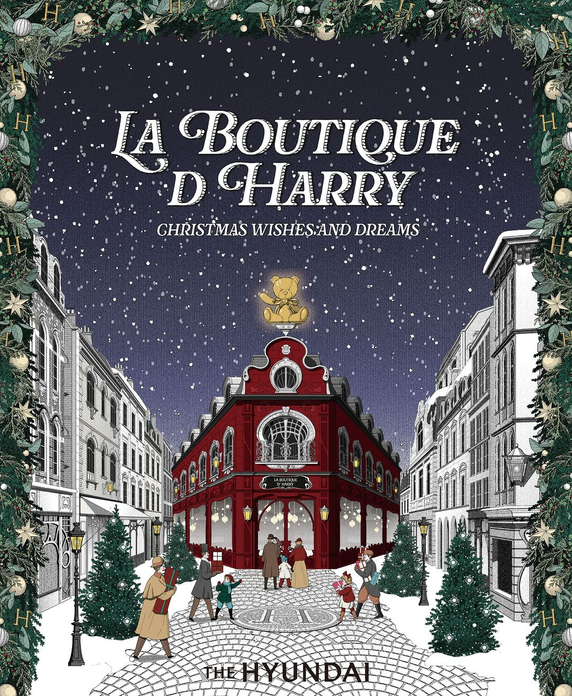

더현대 서울이 다가오는 크리스마스 시즌을 맞아 사운즈 포레스트에 ‘해리의 꿈의 상점(La boutique d’harry)’테마의 ‘H빌리지’를 선보입니다. 이번 H빌리지는 크리스마스 마을을
콘셉트로 대형 크리스마스 트리와 현대백화점 16개 전 점포를 상징하는 16개의 부티크(상점)&마르쉐(시장)등으로 구성됩니다. 아이곰 해리와 할아버지가 운영하는 해리 상점에서 펼쳐지는 크리스마스의
아름다운 이야기들. 크리스마스 이브 저녁, 할아버지의 꿈을 이뤄주기 위해 준비한 해리의 선물이 궁금하다면 La Boutique d' Harry에서 만나보세요!
For the upcoming Christmas season, The Hyundai Seoul is introducing 'H Village' in Sounds
Forest, themed 'La boutique d'harry' (Harry's dream shop). The H Village features a large Christmas tree and
16 boutiques (shops) and marchés (markets) symbolizing all 16 Hyundai department stores, based on the
concept of a Christmas village. The beautiful story of Christmas unfolds in Harry the teddy bear and his
grandfather's shop. On Christmas Eve evening, find out what Harry has in store to make his grandfather's
dreams come true at La Boutique d'Harry!
notice